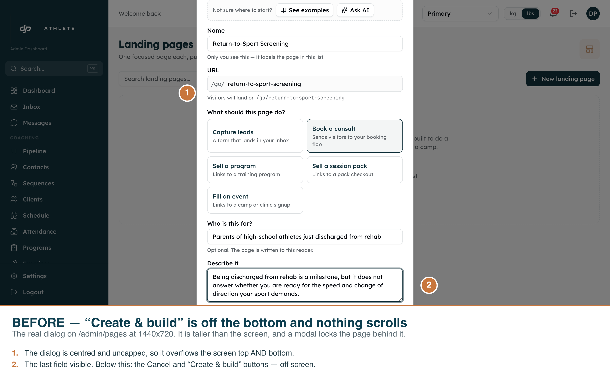
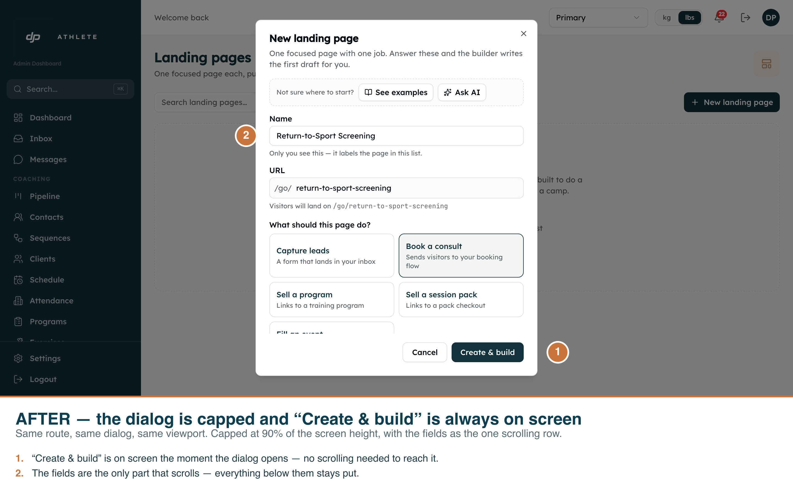
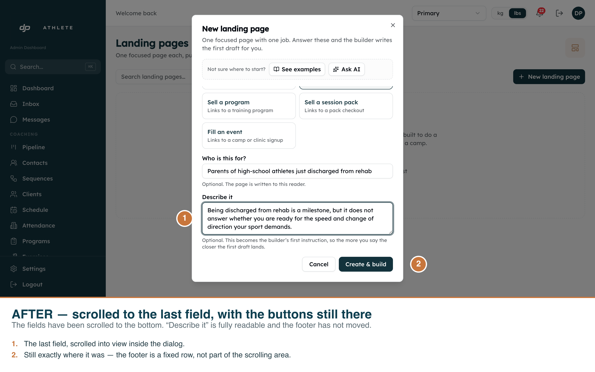

“New landing page” — the button that could not be reached
CreatePageDialog set no height cap, so on a laptop screen the dialog rendered taller
than the viewport. Radix centres the content, so it overflowed the top and the bottom, and
a modal locks the page behind it — “Create & build” was not merely below the fold, it
was unreachable by any gesture. Every shot below is the real dialog on the real
/admin/pages route, driven with Playwright against the dev clone at 1440×720.
Annotations are burned into each PNG.
01 — Before
screenshots/create-page-dialog-scroll/01-before-button-off-screen.png ·
/admin/pages · Chromium 1440×720 @2x

Measured, not inferred: dialog 936 px inside a 720 px viewport, button at
y=767..803, and no element in the dialog scrolls.
02 — After, the moment it opens
screenshots/create-page-dialog-scroll/02-after-footer-pinned.png · same route, same viewport

Dialog 648 px, button at y=623..659, fully on screen.
03 — After, scrolled to the last field
screenshots/create-page-dialog-scroll/03-after-scrolled-to-bottom.png

The fields scrolled; the footer did not. That is the difference between this fix and the simpler
one — see the note below.
The numbers
| Dialog height | Button y | On screen | Anything scrolls |
|---|
| before | 936 px | 767..803 | no | no |
| after | 648 px | 623..659 | yes | yes — the fields row |
| after, scrolled | 648 px | 623..659 | yes | yes — the fields row |
Reproduce with npm run dev then
node scripts/capture-create-page-dialog-scroll.mjs. The script asserts these numbers
and fails if the shots stop demonstrating the fix.
Notes worth keeping
-
The obvious fix is the wrong one. Putting
overflow-y-auto on the
whole dialog also makes the button reachable, so it reads as a fix — but the buttons then scroll
away with everything else. Here the fields are the one scrolling row and the footer is
pinned. Both shapes exist in this repo; roughly 30 dialogs use the first.
-
The primitive caps nothing.
components/ui/dialog.tsx sets no
max-h and no overflow, so every caller pastes the cap in itself and any
that forgets ships this same bug. It only shows on short viewports, which is how it survived review.
-
No dark-mode pair. The admin components were never built against the
.dark class variant — forcing it breaks existing pages — so there is no second
rendering to capture. This is a deliberate omission, not a gap.
-
No empty state. The dialog has no failure or empty rendering of its own; it opens
with blank fields, which is why the shots carry real typed values instead.